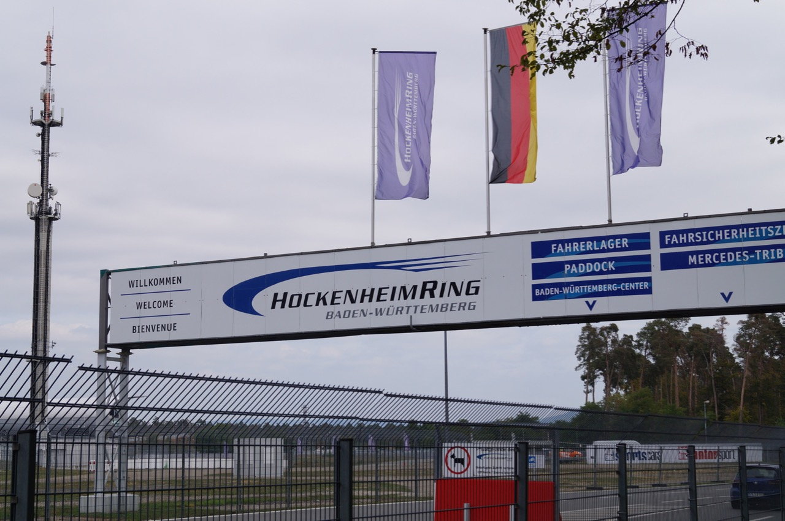

The forecast looks good. After a couple of drizzling days, the next week looks sunny and warm. Perfect weather for bike riding.
But not this morning! It was cool and misty and not much more than ten degrees. Doesn't matter. I left about 8am with a warm jacket.
My route is mostly beside the Rhine-Main-Danube canal. Boats come from the Main river onto the canal, come down past Erlangen and Nuremberg, and onto the Danube. It's flat and easy riding.
I stopped at a few places - Forchheim for a look around, Neuses an der Regnitz for a nice coffee break.
11am and suddenly the mist lifted, and the temperature rose about ten degrees. This is what much of it looked like:
I saw a few freight barges and one tourist boat pass by. The canal was built - well, the first version of it - over 100 years ago, it must have been an enormous effort.
I reached Bamberg about 3pm. It's a busy city, lots of fun navigating through the narrow streets on my bike. But it's a university town, so is well set up with cycle lanes.
And it's a very pretty town.
And finally, a beer or two to recover some energy for tomorrow's biking.
September 10, 2019. 55 km.
I left the YHA in Bamberg at 9.30 and it was a bumpy start riding downhill through the narrow cobbled streets that went every which way. But before long I left the city, and was soon in the sunshine biking beside the Main river.
After an hour I headed up into the hills for a change of pace and to see the Wallburg tower – 1000 years old. That’s it in the distance below.
It was ideal biking weather – around 20 degrees with a slight breeze. I made a fast downhill into Eltmann.
The German flag is a vivid red, black, and gold, but it’s completely misleading – you rarely see those colours around Germany. The buildings are usually pastel colours- lots of yellow, and green and pink:

The temperature rose and a head wind started annoying me… no matter, with an ebike you can choose to ignore a headwind. So I pumped up the power and all was good.
Lunch in Hassfurt, then I rode faster to get to today’s destination Schweinfurt. (meaning ford for pigs). Got there at 3.30. The hostel is right beside the river, this is the view from my room:

If you read the history of Schweinfurt it’s not good. The thirty years war, the Napoleon wars, WW2 – just a long list of bad events. Before World War 2 Schweinfurt specialised in ball bearings, and made most of the ball bearings for Hitler’s war effort. The allies bombed Schweinfurt heavily to take out the ball bearing factories.
But anyway it seems a pretty pleasant place today:


September 11, 2019. 61 km.
Good breakfast in Schweinfurt watching the barges go by on the river. On my way again about 8.30 and a mission to get out of the city. Lots of roadworks and blocked paths. Managed it eventually and was soon in the country side.

The Main river does a big loop south of here, so I decided to cut across westward and see where that took me.
It turned out to be a very quiet rural way. Lots of crops - corn, sunflowers, cabbage. (Why do they farm so much sunflower? Are the seeds really worth enough money?) Lots of horses. Lots and lots of apple trees, so I stopped and ate some.

There were no other bikers at all. Very quiet and sunny. Around midday I came to a sheep-goat-solar power farm. It seemed to work well - the sheep and goats sheltered in the shade behind the solar panels.

Even though it was so remote, the path was good and there were plenty of rest spots.


Around 2pm, and I had crossed over and reached the Main river again. The last hour into Lohr was forgettable - just a cycle lane squeezed between a busy road and the river.
I’m staying in Lohr tonight. It has a castle, town walls, and a pretty centre:

It also has the most specialised museum you’d ever want to see - a museum of electrical insulators. I didn’t go in.

Beer for tonight - Keiler Brauhaus

September 12, 2019. 74 km.
Getting into a routine now. Breakfast, start riding about 8.30, cool misty weather, sunshine comes about 11. Light lunch of almonds (carrying a bag with me) and apples (I have passed thousands of apple trees). Then I carry on and finish about 3, check in, shower, into my fresh clothes and explore where I’ve ended up. Big dinner.
To recap – leaving Lohr was misty and cool:

There were no other bikers, I think I was earlier than normal. Lots of corn fields in the morning, then wine later. The whole day was beside the Main river – it’s wide and slow and placid. According to a sign I saw yesterday, it once was a wild river, but now it has been tamed with a lot of locks and dams.
The valley was narrow at first – so a bit cold at times. Autumn colours just starting to show, it might be very pretty in another couple of weeks.
Soon the valley opened up a little and there were some impressive buildings. First up was Neustadt Kloster:

Mid-morning I reached Rothenfels – well kind of, it was on the far riverbank. I had tried to book a night in the castle (there’s a youth hostel there, about 40 euro a night) but it was full, sadly.
Kept biking, trying to go slow. I only had 50 km to ride today, and didn’t want to get there too early! So I averaged a very slow 13 km/hr. I did manage to cross states today – from Bavaria into Baden-Württemberg.
With some detours, and slow biking, I got to Wertheim about 2.30. Wertheim has an very impressive castle:


This region I’ve been biking though is called Franconia. It’s famous in Germany for beer and wine. Tomorrow I’ll leave Franconia. In celebration I had a “Franconia plate” at the beer garden for dinner.

I don’t know exactly what it was but it was very tasty!
September 13, 2019. 50 km.
My accommodation didn’t provide any breakfast (in Germany it normally does) so that was the first task today. Just out of Wertheim is Faulbach (means “lazy creek” and it was a sleepy place) and I found a cafe that gave me omelette and coffee.
And then, just around the next corner, on the hill, was an enormous castle! I had no idea. This was the castle Henneburg. In contrast with yesterday’s Wertheim castle, this one is in a state of ruin and no tourists.

I biked up to it and looked around. Lots of weeds growing over crumbling stone.


It’s less than 20 km from the Wertheim castle. I wondered about the realities of neighbouring castles, What did the residents think of each other? Did they go for parties at the neighbours castle? Did they have castle envy?
The day grew hot. I smeared sunscreen on and continued. Lots of hay bales sitting in the paddocks beside the river – but no animals. Perhaps they grow the hay here and ship it away?
Mid day and I left the river. I’ve been biking – mostly – along the Main river cycle way. It continues to Frankfurt, but I headed south into the hills for a change of scene.
Very rural, and hilly. And hot. I’d used up all my water by now, and couldn’t find a shop to get any more. Small villages, potholes, and cattle:

And finally a long cool downhill into my destination today – Michelstadt, in the “Odenwald” region. The Odenwald is a kind of isolated (for Germany) rural, forested area. Full of ghost stories and fairy tales.

Beer of the day:
September 14, 2019. 67 km.
Eggs for breakfast. Not for the first time in Germany, I got a hard boiled egg in an egg cup!
I wasn’t sure if I was meant to scoop out the hard middle with a spoon, or just sit the egg in the cup until I picked it up and peeled it. I don’t know if soft-boiled eggs are a thing here?
Anyway once that problem was dealt to I started riding. After a hot high-twenties day yesterday it was a relief to have a cooler overcast day. I stopped at Erbach to look at the palace.

Inside was a room full of deer antlers and rifles! I saw, the whole day, antlers on houses, above doorways, paintings of antlers, sculptures of wild pigs… They’re obviously very proud of the forest (and hunting) here.


Today was all about biking through the hills of the “Odenwald” – this big forest. Trees, cattle, small villages. And hills, mostly up.


Early in the day I passed a farmer, wearing an old flannel shirt, talking with the driver of a car that had stopped in the middle of the road. I suppose some things are the same all over the world.
I passed by a Kneipp pool. You can see these all over Germany – they build a little concrete enclosure around a creek, put handrails in, and people take off their shoes and walk up and down in the cold water. It’s supposed to be good for the circulation (and I’m sure it is!)

Kept on biking through the forest… very hilly. Lots of road sections too, this was like biking in New Zealand.
You see lots of small piles of logs all through the forests here:

They seem to selectively log all forests…much more sensible than in New Zealand, where it’s either ‘cut the whole forest down’ or ‘don’t touch a single tree’.
Finished in Heidelberg today. Big city, busy people, lots and lots of students on bikes weaving through the city. Tomorrow, on to the Rhine.
September 16, 2019. 55 km.
The very last thing I expected was a rugby ground right outside my room last night!

Germany actually has an Olympic silver medal in rugby from the 1900 olympics. And by 1939 they were pretty good – they had beaten France a few times – but world war 2 destroyed the game in Germany. If not for WW2, they might have been World Cup contenders.
I biked through the old part of Heidelberg on my way out of town. It is absolutely full of bikes, but lots of cars as well. They both go fast, the bikes zipping in and around the cars. I don’t understand all the German road signs, but I’m pretty sure the cyclists totally ignore them.

Soon I was out of the city. Flat as a pancake! Such a contrast with yesterday where I had a 400 metre drop coming down from the Odenwald into Heidelberg. But now I’m in the Rhine valley – long, wide and flat. The cycle way traversed vegetable farms – lettuce, broccoli. Some root vegetables I didn’t know. Corn again. Some quince trees.
I noticed I was passing by Hockenheim, so detoured to have a look at the car-racing circuit. You can’t see much (unless you pay) – just the entrance and a few enormous stands.

Stopped for a late lunch in Germersheim, which has another contender for the most specialist museum – the roads museum:

The sun came out just as I crossed the Rhine.

September 17, 2019. 68 km.
Germany has so many dedicated cycle lanes, I spend 80% of my time on these, away from roads. Here’s a couple from my ride today:


Sometimes these are next to a road, but usually a side road, so not too noisy. It’s quiet, some other bikers, occasionally an old person on a mobility scooter. And of course Germany has so many towns and villages, a cafe is never far away.
A cup of coffee is about 2 euro.
A single room is about 40-50 euro. You can get a dorm bed for under 30.
A beer from a restaurant / beer garden is about 3-4 euro for 500 ml.
I am wired! I have my phone on the handlebars, with an excellent app called Komoot.

I plan my route the night before, and Komoot tells me where I am and where to go:
“Cycle free” in English would mean don’t cycle there, but in Germany it means you can ride there.

Wearing a helmet is optional. About half the cyclists wear helmets. I’m not.
September 18, 2019. 56 km.
To the Rhine river and it was a windy day, a couple of windsurfers were having fun on the water. Luckily for me, a tailwind.
I crossed on a ferry at Drusenheim. Same procedure as the day before – just ride on to the boat, which has room for several cars. But no-one asked me for money this time – the boat took off and crossed the Rhine, and I’m thinking “they’ll charge on disembarking”. But no – I rode off the ferry happily into France for free.
The French side was very similar of course, except I understood the road signs even less. Was I meant to be riding on this road?

But it didn’t matter – a sunny day, very few people around. I cycled southward for an hour then crossed back to the German side and headed inland to Offenburg for some more bumpy inner city-cobblestone riding.
Reached Friesenheim and suddenly I was biking through vineyards, heavy with grapes, very pretty in the five o’clock sunlight.
The next day I took off early – not far to go but a big hill in the middle:
Up the valley and now I’m in the Black Forest. Big dark houses with low roofs, cowbells and meadows. Small villages in the valleys.

And a stork nest on a power pole:

Up the valley and over the hill, pushing the bike the final stretch. Then a long downhill to Freiburg.
Turned round a corner and was surprised by a big castle ruin on the hill to my right.

Arrived in Freiburg at 1pm, just after the big climate protest had wound up. Lots of people going home, looking happy, carrying their placards.
September 19, 2019. 90 km.
September 20, 2019. 55 km.
Day trip with my brother in law Martin. We caught the train up to lake Titisee, with bikes. Catching the train uphill is a good idea as you get this:
Lake Titisee is a tourist spot in the Black Forest. It looks like this:
The ride – until the flats near Freiburg – was a mix of forests and farmland with some small towns.

First stop Hinterzarten, and a nice looking police station. It seemed a very peaceful place. Maybe the police spend most of their time gardening.

Biked on uphill. Sunny day. Two or three other bikers. The Black Forest isn’t all forest – it’s a nice mix of forests and small farms.

Then started the big downhill… stopped for lunch at the monastery village of Sankt Peter. Big and impressive church. Also, the village is entirely self-sufficient for electricity. They have some kind of hi-tech (I think) wood burner system, and fuel it with the local wood.


That’s a google photo of the church – there was a wedding about to start when we had a quick look and I didn’t want to go snapping photos.
After the lunch, careful with only one glass of wine, a big drop down to Freiburg.
Then I caught the train back to Baden-Baden. Difficult. German trains are sometimes really crowded (this one was) and they don’t always stop for long – so you have to extract the bike, pushing through a bunch of people in a very short time.
Made it back to Baden-Baden, one more night then back to NZ.
September 21, 2019. 51 km.